Lancering om
1 år for $6.99
Tidsbegrænset tilbud — gå ikke glip af det
14. februar 2026
Indløs tilbudAutomatisk skiftdetektering
for hockeyspillere
Ved præcis, hvor meget istid du får — uden at trykke på dit ur. Spor mål, straffe og perioder. Start bare en session og spil.
Forudbestil nuTilgængelig på Apple Watch + iPhone · Lancering 14. februar 2026

Funktioner
Alt hvad du behøver for at spore din kamp
Automatisk skiftdetektering
Træd på isen, og dit ur ved det. Ingen knapper at trykke under spil — sensorer registrerer skøjteløb vs. bænktid automatisk.
Kamphændelsesregistrering
Log mål, assists og straffe direkte fra dit håndled. Spor perioder og hold en komplet oversigt over hver kamp.
Sundhedsdata i realtid
Overvåg puls, forbrændte kalorier og bevægelsesintensitet i realtid. Se hvor hårdt du arbejder hvert skift.
Sessionsanalyse
Gennemgå total istid, antal skift, gennemsnitlig skiftlængde og personlige rekorder.
Apple Health-integration
Sessioner synkroniseres til Apple Health som hockeytræninger. Bidrag til dine aktivitetsringe.
Virker offline
Dit ur registrerer alt uafhængigt. Ingen iPhone nødvendig på bænken — data synkroniseres automatisk efter kampen.
Sådan virker det
Fra opvarmning til analyse efter kampen
Før kampen
Åbn Ice Time Track på dit Apple Watch. Tryk på Kamp, Træning eller Scrimmage.
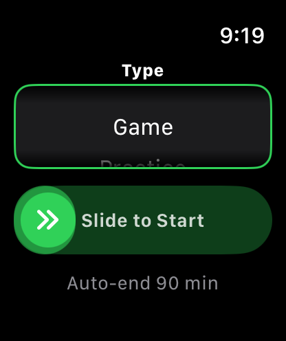
Under kampen
Træd på isen, og dit ur registrerer det automatisk. Log mål og straffe med et tryk.
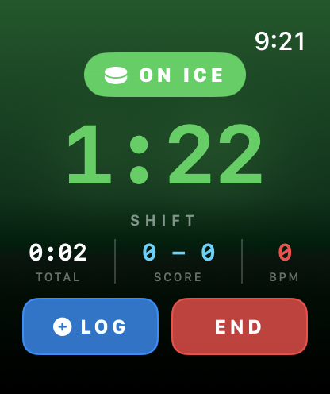
Efter kampen
Din session synkroniseres til din iPhone. Gennemgå istid, skift, puls og kamphændelser.
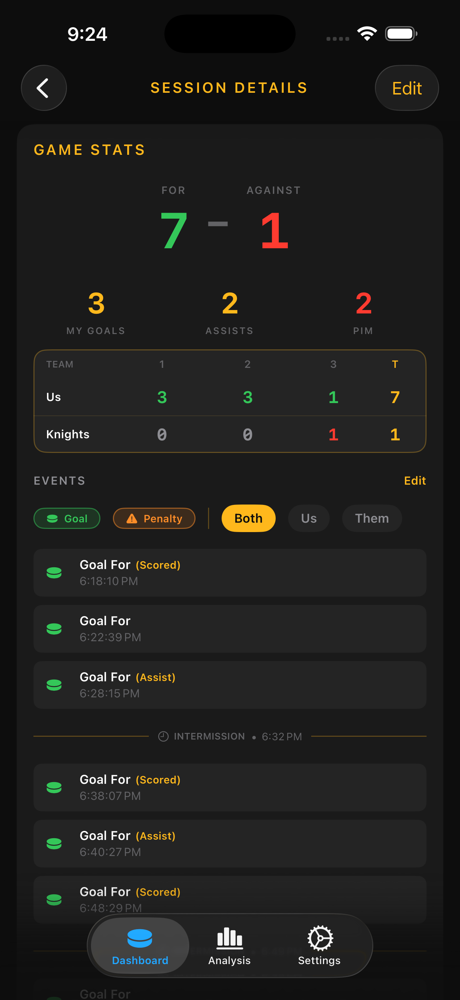
Se det i aktion
Designet til hockeyspillere
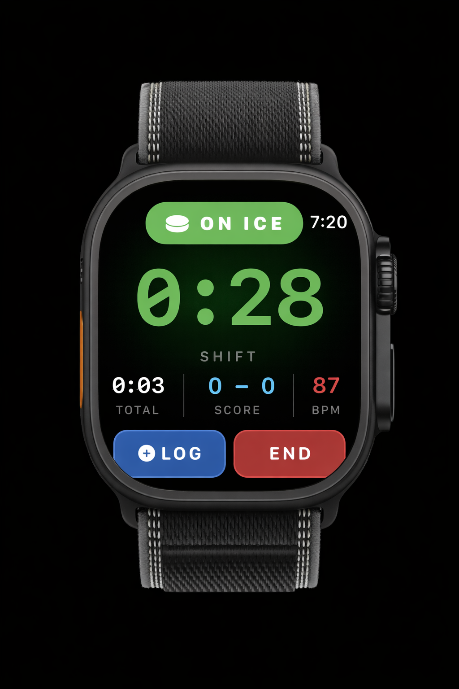
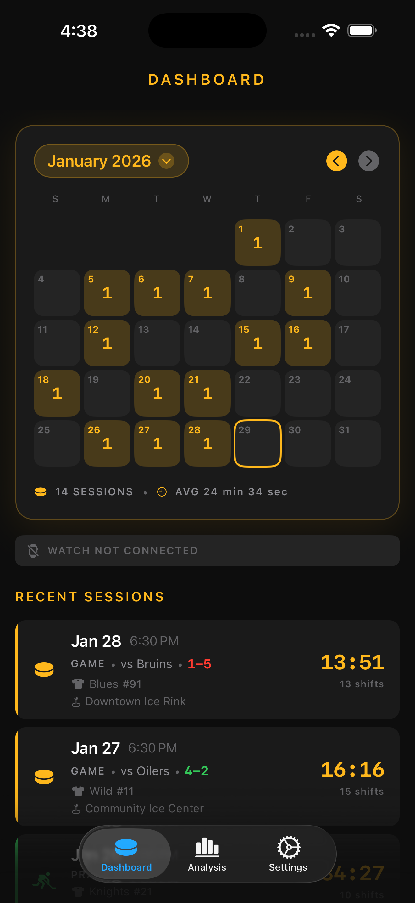
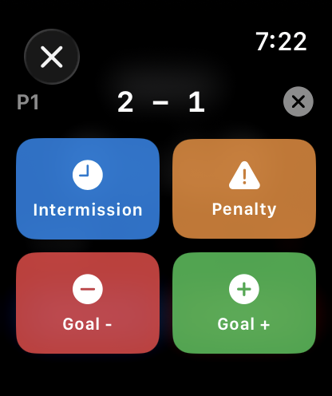
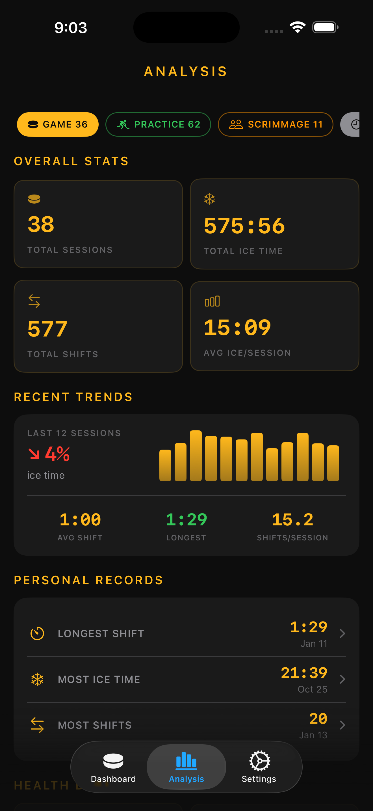
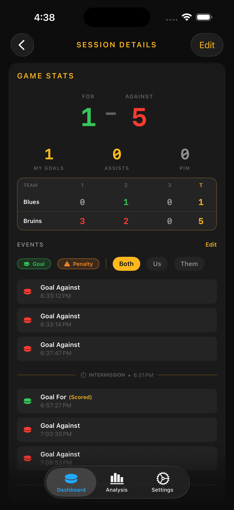
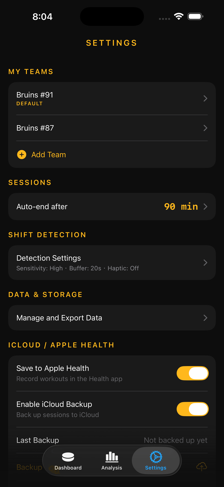
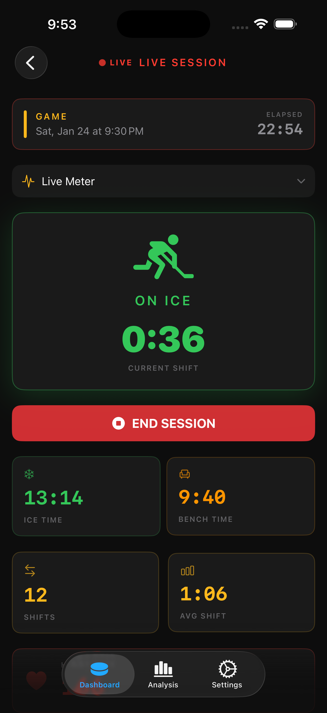
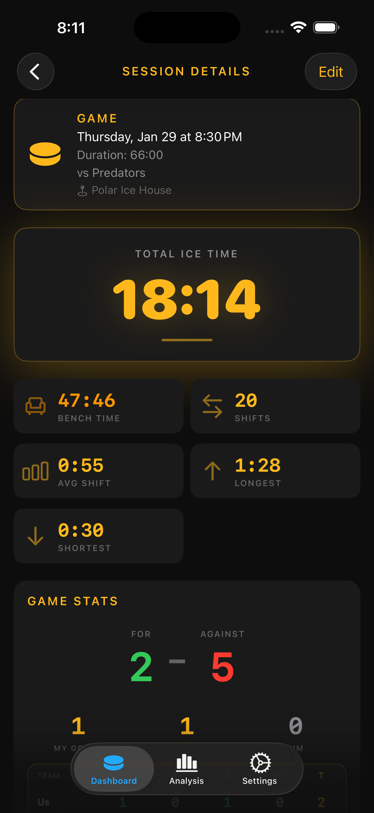
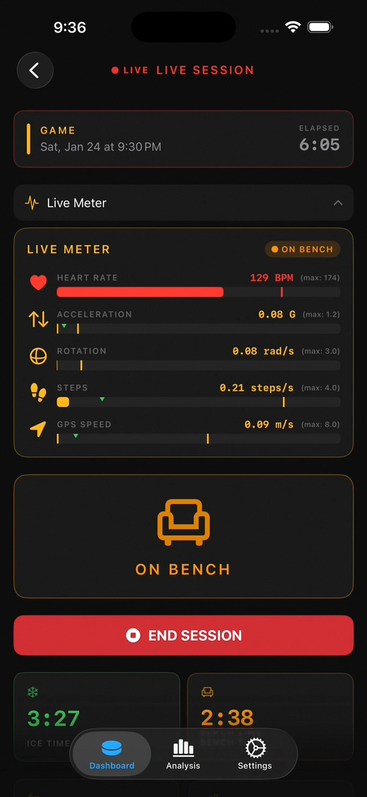
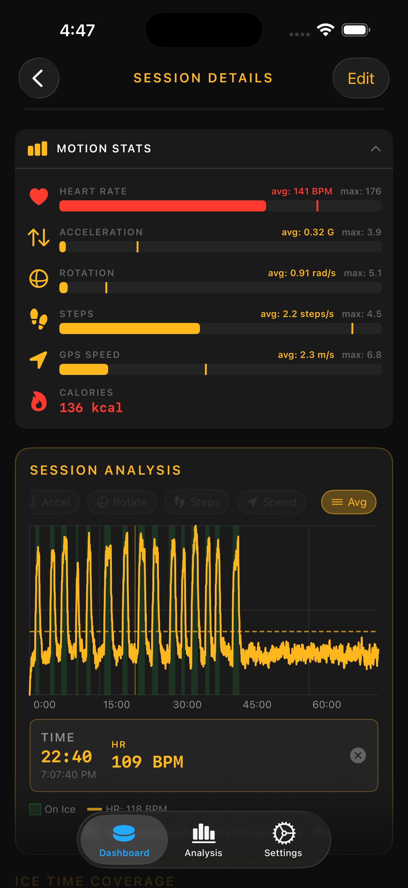
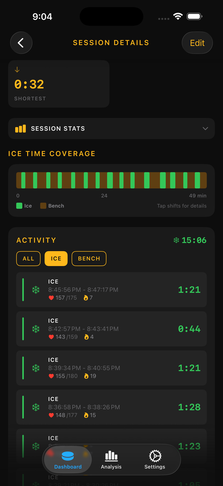
Hvad spillere siger
Betroet af hockeyspillere overalt
"Endelig en app der sporer min istid uden at jeg skal trykke på noget. Game changer for at spore mine skift."
"Elsker at se min puls og skiftstatistik efter hver kamp. Hjælper mig med at forstå min kondition."
"Den automatiske detektering er overraskende præcis. Mine børn bruger den til hver kamp nu."
Ofte stillede spørgsmål
Alt hvad du behøver at vide om Ice Time Track
Åbn Ice Time Track-appen på dit Apple Watch. Vælg din sessionstype (Kamp, Træning, Scrimmage eller Andet) og tryk for at begynde. Appen begynder automatisk at registrere, hvornår du er på isen kontra på bænken.
Det er etiketter til at organisere dine sessioner. Kamp er til officielle kampe, Træning til holdtræning, Scrimmage til uformelle kampe og Andet til alt andet som offentlig skøjteløb. Registreringen fungerer ens for alle typer.
Nej. Apple Watch optager alt uafhængigt. Din session synkroniseres automatisk til din iPhone, når enhederne er inden for rækkevidde efter kampen.
Et "skridt" registreres af dit Apple Watch, når det registrerer et rytmisk armsving via accelerometeret. Det registrerer ikke din fod, der rammer jorden — i stedet genkender det armbevægelsen, der følger med bevægelse. Under ishockey skaber din skøjtetag og stickwork lignende armbevægelser, så appen bruger "skridt per sekund" som en indikator for aktiv spil.
Acceleration måler, hvor hurtigt du accelererer, bremser eller skifter retning. Dit Apple Watch' accelerometer registrerer denne bevægelse i tre dimensioner. Hårde stop, eksplosive starter og hurtige retningsskift under et udbrud registreres som høj acceleration — mens du sidder på bænken og venter på dit næste skifte, vises minimal aktivitet.
Rotation måler, hvor meget og hvor hurtigt du drejer eller snurrer. Dit Apple Watch' gyroskop registrerer denne bevægelse, som er særligt almindelig i ishockey — crossovers gennem den neutrale zone, vending for at skøjte baglæns i forsvar eller at snurre fri af en tackling skaber alle tydelige rotationsmønstre. Kombineret med acceleration hjælper dette appen med at skelne aktivt skøjteløb fra at stå stille.
Appen kombinerer flere sensorer: accelerometeret registrerer bevægelsesintensitet, skridttælleren sporer din skøjtetag, og GPS måler din hastighed. Når du aktivt skøjter, viser disse sensorer høj aktivitet. Når du sidder på bænken, falder aktiviteten markant.
Dit Watch aflæser bevægelsesintensitet, skøjtetag og GPS-hastighed. Når appen registrerer stærk nok bevægelse fra disse sensorer, markerer den dig som på isen. Når alle tre falder til lave niveauer og forbliver der, starter overgangen til bænken.
Følsomhedsindstillingen styrer, hvor meget bevægelse der kræves:
• Høj — Opfanger lettere bevægelser. Brug dette, hvis dine skifter ikke registreres.
• Medium — Balanceret for de fleste spillere. Dette er standard.
• Lav — Kræver stærkere bevægelse for at tælle som skøjteløb. Brug dette, hvis du får falske på-isen-aflæsninger, mens du er på bænken.
Avancerede indstillinger giver dig fuld kontrol over hver detektionstærskel. Justering af en skyder skifter automatisk følsomheden til "Brugerdefineret."
På-isen-udløser — For at blive markeret som skøjteløb, skal ENTEN din GPS-hastighed overstige sin tærskel i 3 sekunder, ELLER både din acceleration og skridt-kadence skal overstige deres tærskler i holdevarigheden.
• Acceleration: 0.2–3.0G (default: 0.2G)
• Step Cadence: 0.4–2.0 steps/sec (default: 0.8)
• GPS Speed: 0.5–3.0 m/s (default: 1.5)
• Hold Duration: 1–5 sec (default: 2s)
På-bænken-udløser — For at skifte til bænk, skal ALLE tre aflæsninger falde under deres tærskler i holdevarigheden.
• Acceleration: 0.3–1.5G (default: 0.7G)
• Step Cadence: 0.4–1.5 steps/sec (default: 1.0)
• GPS Speed: 0.1–1.0 m/s (default: 0.5)
• Hold Duration: 1–5 sec (default: 3s)
Vi anbefaler at bruge forindstillede niveauer (Høj, Medium, Lav), medmindre du har brug for finjustering. Tryk på "Nulstil til forindstilling" når som helst for at vende tilbage.
Dette er "bevægelsesbufferen" — en kort venteperiode (standard 20 sekunder), før appen bekræfter, at du er tilbage på bænken. Dette forhindrer korte pauser under et skifte i at blive talt som bænktid.
Bevægelsesbufferen er en indstillelig forsinkelse (10-30 sekunder), der forhindrer falske skifteafslutninger. Når du holder op med at bevæge dig, venter appen denne tid, før den markerer dig som "på bænken". Hvis du begynder at bevæge dig igen under bufferen, fortsætter dit skifte uafbrudt.
Kamploggen lader dig registrere begivenheder under en session — mål for, mål imod, straffe og periodestarter. Begivenheder logges fra dit Apple Watch under spil og kan også tilføjes fra din iPhone. Scoren og personlige statistikker (mine mål, mine assists, strafminutter) beregnes ud fra de begivenheder, du logger.
Nej. Kamploggen er tilgængelig for alle sessionstyper — Kamp, Træning, Scrimmage og Andet. Du kan logge mål og straffe i enhver session.
Ja. Tryk på +-knappen ved siden af "Seneste sessioner" på Dashboardet for at tilføje en manuel kampregistrering. Du kan indtaste score, modstander, mål, assists, straffe og periodeinformation — alt uden at bære dit Watch. Dette er nyttigt til at logge kampe bagefter eller til analytiske formål.
Under en aktiv session skal du trykke på LOG-knappen nederst på skærmen. Vælg begivenhedstypen (mål for, mål imod, straf eller periodestart) og udfyld detaljerne. Begivenheden registreres med det aktuelle tidspunkt og vises på din iPhone inden for få sekunder.
Mens en session er aktiv på dit Watch, åbn iPhone-appen for at se din live session. Begivenheder logget på Watch vises på din iPhone i realtid. Du kan også tilføje eller slette begivenheder direkte fra iPhone. Bemærk at ændringer foretaget på iPhone ikke sendes tilbage til Watch under sessionen — Watch fortsætter med at vise sin egen log. Når sessionen slutter, flettes begge kilder automatisk, og eventuelle ændringer du har foretaget på iPhone (tilføjelser og sletninger) har prioritet.
Fire typer: Mål for (valgfrit marker "Jeg scorede" eller "Jeg assisterede"), Mål imod, Straf (med straftype, varighed og om den er mod dit hold eller modstanderen) og Periodestart (markerer pauser i din tidslinje).
Hvis du tilføjer en begivenhed uden at angive et tidsstempel, gemmes den uden et. Begivenheden vises stadig i din kamplog og tæller med i din score og statistik. Du kan altid gå tilbage og tilføje eller rette tiden efter sessionen fra sessionens detaljeside på din iPhone.
Ja. Åbn sessionen på din iPhone og tryk på en begivenhed for at redigere dens detaljer — type, tidsstempel, personlig involvering (scoret/assisteret), strafinformation og mere. Du kan også tilføje nye begivenheder eller slette eksisterende. Alle ændringer gemmes med det samme.
Under sessionen fører Watch og iPhone hver sin egen optegnelse. Når sessionen slutter og Watch sender de endelige data til din iPhone, fletter appen begge kilder: begivenheder du slettede på iPhone fjernes, begivenheder du tilføjede på iPhone inkluderes, og scoren genberegnes fra den flettede liste. Det endelige resultat gemmes som én samlet session.
Følsomhed styrer, hvor meget bevægelse der kræves for at registrere "skøjtning." Høj følsomhed registrerer lettere bevægelser (godt hvis skift ikke bliver registreret). Lav følsomhed kræver stærkere bevægelse (godt hvis du får falske registreringer på bænken). Medium er standard og fungerer godt for de fleste spillere.
Åbn Ice Time Track-appen på din iPhone, gå til Indstillinger, og juster "Bevægelsesbuffer"-vælgeren. Kortere buffere (10-15 sekunder) afslutter skift hurtigere. Længere buffere (25-30 sekunder) er mere tils give over for korte pauser under skift.
Haptiske alarmer er vibrationsnotifikationer på dit Watch, når din status ændres. Du kan indstille dem til at vibrere, når du træder på isen, når du vender tilbage til bænken, begge dele, eller slå dem helt fra. Dette hjælper dig med at holde styr på tingene uden at se på dit Watch.
Auto-afslut stopper automatisk din session efter en indstillet tid (standard 100 minutter). Dette forhindrer appen i at køre uendeligt, hvis du glemmer at afslutte manuelt, hvilket sparer batteri og sikrer, at dine data gemmes.
Ja. Ændringer af følsomhed, bevægelsesbuffer og haptiske alarmer synkroniseres til dit Watch og træder i kraft med det samme under en igangværende session. Du behøver ikke vente til næste session – justeringer anvendes inden for sekunder efter ændring på din iPhone.
Avancerede indstillinger lader dig finjustere hver detektionsgrænse individuelt. Udvid sektionen i Detektionsindstillinger for at konfigurere acceleration, skridtkadence, GPS-hastighed og holdvarighed for både på-isen- og på-bænken-udløsere. Når du justerer en skyder, skifter følsomheden automatisk til "Brugerdefineret." Brug "Nulstil til forindstilling" for at gå tilbage til Lav/Medium/Høj forindstillinger.
Når aktiveret gemmer appen din session som en hockey-træning med: varighed, forbrændte aktive kalorier og pulsdata (gennemsnit og maksimum). Dette bidrager til dine Aktivitetsringe og konditionshistorik.
Åbn Indstillinger i iPhone-appen og slå "Gem til Apple Health" til. Når aktiveret gemmes afsluttede sessioner som træninger. Når deaktiveret forbliver dine data kun i Ice Time Track.
Sørg for at dit Watch sidder tæt og pulssensoren har god hudkontakt. Pulsen kan tage 30-60 sekunder om at vises efter start af en session. Hvis problemerne fortsætter, tjek at Ice Time Track har tilladelse til at læse puls i Indstillinger > Privatliv > Sundhed.
Sessioner synkroniserer automatisk, når begge enheder er inden for rækkevidde og forbundet. Når du afslutter en session på dit Watch, overføres den til din iPhone inden for få sekunder til et par minutter. Du kan også manuelt udløse en synkronisering fra iPhone-appen.
Sørg først for, at sessionen er afsluttet på dit Watch. Åbn begge apps, og sørg for, at Bluetooth er aktiveret. Sessioner synkroniserer, når Watch-appen er åben eller kort efter afslutning. Hvis den stadig ikke vises, prøv at åbne Watch-appen igen for at udløse synkroniseringen.
Ja. I iPhone-appen skal du gå til din sessionsliste, swipe til venstre på den session, du vil fjerne, og trykke på Slet. Dette fjerner den fra begge enheder.
Prøv at justere følsomheden for skiftdetektering i Indstillinger. Hvis skift ikke registreres, øg følsomheden til Høj. Hvis du får falske detektioner på bænken, sænk til Lav. Sørg også for, at dit Watch sidder sikkert på håndleddet, ikke over tykke handsker.
Dette kan ske, hvis Watchet genstarter, eller appen går ned. Tjek om automatisk afslutning blev udløst tidligere end forventet (kan justeres i Indstillinger).
Watch- og iPhone-appsene skal kommunikere for at fuldføre den indledende opsætning. Sørg for, at iPhone-appen er åben under opsætning af Watch. Hvis skærmen forbliver, tvangsafslut begge apps og genstart dem. Hvis problemet fortsætter, slet og geninstaller både iPhone- og Watch-appsene.
Placering (GPS) bruges til at måle din skøjtehastighed, hvilket hjælper med præcist at detektere, hvornår du er på isen versus bænken. GPS-data forbliver på dine enheder og uploades ikke nogen steder.
Bevægelsessensorer (accelerometer og gyroskop) registrerer dine bevægelsesmønstre for at skelne mellem skøjteløb og at sidde. Fitnessadgang gør det muligt at læse dit skridttal for at forbedre detektionens nøjagtighed. Disse data behandles udelukkende på dit Watch.
Nej. Alle dine sessionsdata, sundhedsmetrikker og sensoraflæsninger forbliver på dit Apple Watch og iPhone. Intet uploades til eksterne servere. Dine data er dine.
Mulighed 1 (på Watch): Åbn Indstillinger > Privatliv og sikkerhed > Lokalitetstjenester > Ice Time Track, og vælg "Under brug". Mulighed 2 (fra iPhone): Åbn Watch-appen > Privatliv > Lokalitetstjenester > Ice Time Track, og aktiver adgang.
Klar til at spore din istid?
Hent Ice Time Track og start din næste session. Automatisk skiftdetektering, kamphændelseslogning og sundhedsdata — alt fra dit håndled.
Forudbestil nu